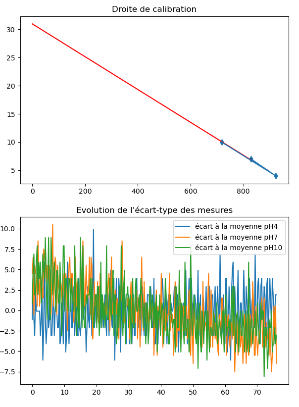

Calibration du pH mètre
Pour une meilleure exactitude, un étalonnage fréquent de l’instrument est recommandé. Un étalonnage est indispensable dans les cas suivants :
L’électrode a été remplacée
Au moins une fois par mois
Après avoir mesuré des produits chimiques agressifs
Lorsqu’une grande exactitude est requise
Préparation
Versez une petite quantité de solution pH 7,00 et pH 4,00 dans deux récipients propres. Pour une meilleure exactitude, il est conseillé de prendre deux récipients par solution, un récipient pour le rinçage et un autre pour l’étalonnage à proprement dit. Le choix des solutions étalons se fait selon l’utilisation, soit pH 7,00 et pH 4,00 dans le cas d’une calibration à deux tampons et pH 10,00, pH 7,00 et pH 4,00 dans le cas d’une calibration à trois tampons.
Procédure
Calibration à deux solutions tampons
Ôtez le capuchon de protection en bout de la sonde pH, rincez celle-ci avec de l’eau distillée puis immergez l’électrode dans une solution pH 7,00 ; agitez délicatement pendant quelques secondes ; immergez la sonde de température et attendez 2 à 3 minutes pour avoir un équilibre thermique correct.
Choisissez dans le menu interface l’option Calibrer en appuyant sur le chiffre 1 et en validant avec
la touche Entrée:
===========================================================================
MENU PRINCIPAL
===========================================================================
Que souhaitez-vous faire ?
1 - Calibrer
2 - Mesurer
3 - Représenter graphiquement
4 - Quitter
===========================================================================
?
-> 1
===========================================================================
MENU CALIBRATION
==========================================================================
Voulez - vous :
1 - Calibrer avec deux tampons (pH 7 et 4) ?
2 - Calibrer avec trois tampons (pH 7, 4 et 10) ?
3 - Calibrer à partir d'une calibration déjà existante dans le répertoire
4 - Quitter le menu calibration et retourner au menu principal
===========================================================================
?
Sélectionnez ensuite l’option Calibrer avec deux tampons de la même façon.
Validez une seconde fois lorsque vous serez prêt à mesurer le tampon à
pH 7,00. Le programme vous demandera alors de patienter une minute le temps que la sonde pH se
stabilise puis effectuera 100 mesures pour une durée approximative de deux minutes.
Une fois les mesures à pH 7,00 effectuées, rincez la sonde pH avec de l’eau distillée.
Plongez l’électrode dans la solution pH 4,00 et attendez quelques minutes pour la stabilisation de la mesure. Une fois prêt à mesurer le tampon à pH 4,00, appuyez sur la touche Entrée pour initier les mesures. Comme plus tôt, le programme vous demandera alors de patienter 1 minute le temps que la sonde pH se stabilise puis effectuera ses 100 mesures.
Une fois les mesures effectuées, le programme vous demandera:
’Voulez-vous visualiser la calibration (O/N) ?’
En répondant O, o, Y ou y, vous obtiendrez alors la courbe d’étalonnage de la calibration
que vous venez d’effectuer, ses paramètres et le coefficient de corrélation. L’étalonnage est alors terminé, vous pouvez passer
à vos Mesures du pH.
Si le programme juge que la calibration n’est pas satisfaisante (R2 < 0.95), il vous sera proposé de
recalibrer votre pH-mètre.
Si vous souhaitez recalibrer le pH-mètre, choisissez l’option 1.
Si vous souhaitez continuer ainsi et commencer à mesurer, choisissez l’option 2.
Calibration à trois solution tampons
Si vous souhaitez calibrer votre pH-mètre avec 3 solutions tampons la procédure est la même mais il vous faudra
continuer avec la solution pH 10,00.
Pour cela, choisissez dans l’interface MENU CALIBRATION l’option 2 - Calibrer avec trois
tampons:
===========================================================================
MENU CALIBRATION
==========================================================================
Voulez - vous :
1 - Calibrer avec deux tampons (pH 7 et 4) ?
2 - Calibrer avec trois tampons (pH 7, 4 et 10) ?
3 - Calibrer à partir d'une calibration déjà existante dans le répertoire
4 - Quitter le menu calibration et retourner au menu principal
===========================================================================
?
-> 2
Quel est le pH de la troisième solution que vous souhaitez utilisez ? ( 9 / 10 / 11)
-> 10
Prêt pour calibration pH7 ?
Patientez 1 min le temps que la sonde se stabilise
Les mesures commencent
La température relevée est de 25.91732608695652
Prêt pour calibration pH4 ?
Patientez 1 min le temps que la sonde se stabilise
Les mesures commencent
La température relevée est de 25.974727592267133
Prêt pour calibration pH10 ?
Patientez 1 min le temps que la sonde se stabilise
Les mesures commencent
La température relevée est de 26.36460258780037
Les paramètres a et b de notre regression linéaire sont [-2.91457992e-02 3.09806410e+01]
('r2 =', 0.9974)
Voulez-vous visualiser la calibration (O/N) ?
Les données de la calibration effectuée sont enregistrées dans le dossier CALIB.
Note
Si vous ne possédez pas de solution tampon pH 10 la calibration à 3 solutions est aussi possible avec des pH 9 et pH 11. Le programme vous demande pour cela:
Quel est le pH de la troisième solution que vous souhaitez utilisez ? ( 9 / 10 / 11)
Il suffit alors de renseigner la valeur pH de la troisième solution tampon utilisée et la procédure est la même que décrite plus haut.
Calibration à partir de données enregistrées
Il est aussi possible de calibrer votre pH-mètre à partir de données de précédentes calibrations déja répertoriées dans le dossier CALIB.
Pour cela, choisissez dans le MENU CALIBRATION l’option 3 - Calibration à partir d’une calibration déjà exitante dans le répertoire.
Une liste de fichier vous est proposée de la forme:
===========================================================================
MENU CALIBRATION
==========================================================================
Voulez - vous :
1 - Calibrer avec deux tampons (pH 7 et 4) ?
2 - Calibrer avec trois tampons (pH 7, 4 et 10) ?
3 - Calibrer à partir d'une calibration déjà existante dans le répertoire
4 - Quitter le menu calibration et retourner au menu principal
===========================================================================
?
-> 3
Cette option n'est possible que pour des calibrations à 3 solutions, quel est le pH de la troisième solution de la calibration que vous souhaitez utilisez ? ( 9 / 10 / 11)
-> 10
Calibrations disponibles:
0 - ./CALIB/fichier_calibration_pH10.0 Mon Jun 23 11:46:13 2025.csv
Choisissez votre calibration en entrant son numéro d'ordre:
-> 0
Mon Jun 23 11:46:13 2025
./CALIB/fichier_calibration_pH4.01 Mon Jun 23 11:46:13 2025.csv
./CALIB/fichier_calibration_pH7.01 Mon Jun 23 11:46:13 2025.csv
./CALIB/fichier_calibration_pH10.0 Mon Jun 23 11:46:13 2025.csv
Les paramètres a et b de notre regression linéaire sont [-2.91457992e-02 3.09806410e+01]
('r2 =', 0.9974)
Il suffit alors de renseigner le numéro d’ordre des données que vous souhaitez utiliser et valider avec la touche Entrée.
Note
Le fichier à sélectionner est de la forme ./CALIB/fichier_calibration_pH10.00 Day Month H_min_sec Year.csv mais implicitement
ceux correspondant à la même calibration pour les pH 4.00 et 7.00 vont aussi être utilisé. Notez que si la calibration que vos souhaitez
retrouver n’utilisait pas de solutions pH 10 mais pH 9 ou pH 11 le programme vous demande avant de lister les fichiers:
Cette option n'est possible que pour des calibrations à 3 solutions, quel est le pH de la troisième solution de la calibration que vous souhaitez utilisez ? ( 9 / 10 / 11)
Il vous suffit d’indiquer le pH de la troisième solution, tout les fichiers de calibration utilisant la solution au pH indiqué vont être listés. Une fois une calibration sélectionnée les fichiers correspondant à la même calibration pour les pH 4.00 et 7.00 le seront aussi implicitement.
Une fois le fichier renseigné la calibration sera effectuée, la droite de la calibration choisie apparaitra à l’écran ainsi que la courbe de l’évolution de l’écart-type des mesures au cours du temps.
Vous pouvez maintenant effectuer vos Mesures du pH.
Avertissement
Assurez-vous que les fichiers que vous renseignez correspondent au format demandé :
un fichier csv, avec pour chaque ligne les informations temps(s);température(°C);voltage(mV):
0.00; 23.27; 180.00
0.25; 23.33; 180.00
0.51; 23.33; 180.00
0.76; 23.33; 180.00
1.02; 23.37; 180.00
1.27; 23.40; 180.00
1.52; 23.43; 180.00
1.78; 23.43; 179.00
2.03; 23.47; 180.00
...
Par défaut cela correspond au format des données de Mesures du pH.